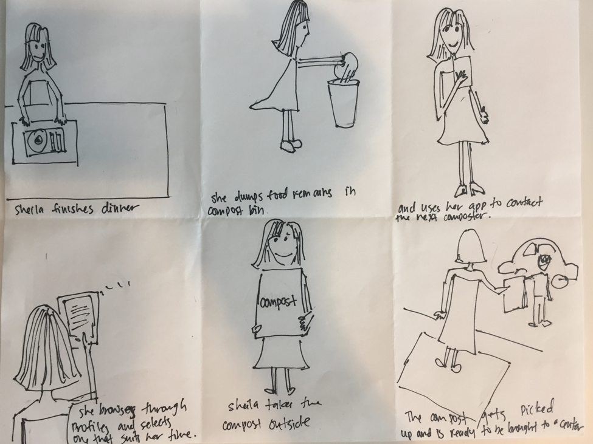
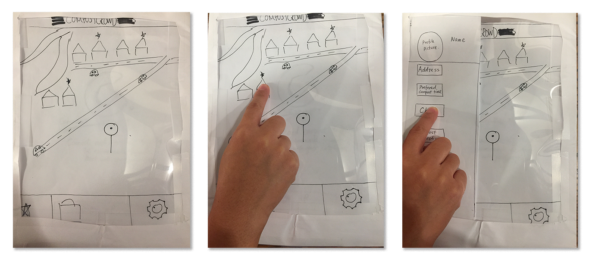
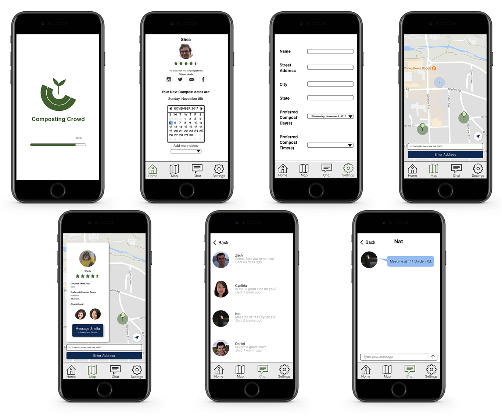
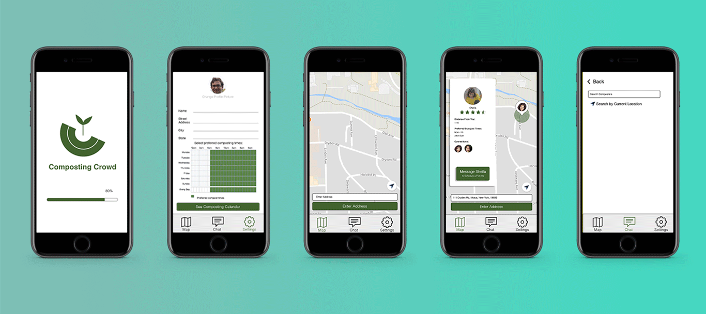

Composting Crowd App
The Team
Cynthia Yue, Daniel Sainati, Shea Belskey, Zach Griffin and Yingjie Ding

Composting Crowd
Composting crowd is a mobile app designed to reduce waste.
Application of the Double Diamond Method

Our application of the Double Diamond Method
General Problem
Not enough college students compost. Despite overconsumption and overproduction of garbage being a large detriment to the environment, composting is not a common practice amongst full-time college students living on or near campus.
User Research
To gain a better understanding of the daily habits related to students’ composting behaviors, we recruited five undergraduate students to participate in our interviews. The interviews took place in the home of each participant, during the daytime after the participant has made a meal. This is the best time to observe how participants handle organic food waste, and for us to ask follow up questions based on their behavior.
Insight
Six major themes that emerged from synthesized field notes include: previous knowledge, factors for and against composting, feelings about composting, external motivations for composting, amount of food waste produced and preferred method of communication.

Synthesized notes
None of our participants had designated compost bins present at their residence. Ease of use was cited as the primary reason for a participant’s decision to not regularly compost. Generally, participants would be more willing to compost regularly if the task did not involve a lot of extra effort. Past experiences and knowledge on the composting process were also identified as contributing factors to a participant’s willingness to start composting more frequently. Participants were more willing to compost if a close friend or relative actively composts. Participants did not feel confident in their understanding of what composting is, and did not know how to compost at home even when there was a willingness to. Lastly, text messaging and social media were the most common modes of communication amongst these individuals.
Using these insights, we developed a persona. Meet Sheila!

Photo of Sheila
“I think composting is good for the environment. It makes me feel good to compost, but I will not go out of my way to do so.”
Background: Sheila is a junior at Cornell who lives in Collegetown in a shared apartment complex. She has 3 roommates and also shares the communal trash bins with others in her building.
Goals include: getting good grades at Cornell while still maintaining a healthy diet.
Motivations: Sheila cares about how she presents herself to the world and makes an effort to maintain a reputation for being a well-educated young woman. She passively supports various causes that she believes are good for society and wants her peers to recognize her for it.
Life goals: Sheila wants to be successful in life. Strives to do well in school and have a respectable career after graduation so she can live a comfortable life.
End goals: Sheila needs to achieve the task of taking out her trash more often. She currently has little incentive to take out the trash unless it’s absolutely necessary. For this reason, the trash will pile up in Sheila’s kitchen until it reaches a point of discomfort. Because Sheila is a college student with no income, she also wants to save money. If there is a way to discard of waste that helps her save money, she is all for it.
Experience goals: Sheila wants to feel good about taking out her trash. Because she is active on social media and cares about how her peers perceive her, she wants to be acknowledged for good practices such as composting and recycling.
Attitude: Sheila believes in the benefits of composting and thinks it’s cool. She feels good when she engages in composting and likes being observed by her peers while doing it. She dislikes waste and tries to use only what she can. Her attitudes are also influenced influenced by people within her social circle; she is more likely to support a cause if others within her social network are also actively engaged.
Past experience: Sheila has some experience maintaining an organic garden with her mom. They composted at home and used the compost as fertilizer for their garden. Additionally, when Sheila dines at food courts that have accessible compost options, she will eparate her compostables from landfill.
Behaviors: Sheila owns a pet to which she feeds her organic food waste. She cooks sparingly and usually grabs breakfast on her way to school. When she does cook, she tries to cook only what she needs so that she doesn’t produce a lot of waste. Sheila drives and owns a car that she doesn’t use very often. She also owns a smartphone and considers Facebook Messenger and text messaging her most frequent sources of communication. When she wants to learn about local initiatives here in Ithaca, she either uses Google or reaches out to her social network.
Specific Problem
It is too difficult for full time undergraduate students to compost regularly.
Design Ideation
We designed for users who generally understood the environmental benefits of composting, but did not feel like they knew enough about composting to engage frequently. In the ideation phase of our project, we generated 100 different design solutions that focused on ease of use.

Ideation sketches
The final design solution we settled on was a mobile app that connects users to others who are interested in composting and allow them to coordinate dropping off compost at the local composting center. Our solution increases the convenience of composting by making it significantly easier for our persona to dispose of accumulated compost; instead of having to drive to the compost center when the container is full, they only need to drive when it is their turn to collect the community’s compost, which should be significantly less often. It also fits very well with the CHI 2018 theme of Engaging Communities, since it addresses the composting issue while also helping people connect and build communities around composting. We searched for similar ideas on the internet and the App Store, and we did not find any apps or services like ours, and found remarkably few that even attempted to address the issues we’d identified.
Storyboard 1

Storyboard 2

Storyboard 3
Prototype
Low fidelity prototypes:
Paper prototype

Balsamiq prototype
High fidelity prototype:
Invision prototype
UX design problems identified from user testing:
Problem 1: Messaging new people from the map
Problem Group: Misplaced features
Problem Severity: Critical
Problem Explanation: When asked to message the nearest person, every single user navigated to the chat page rather than the map page. This is a result of the fact that the existence of a chat page implies that this would be how one would begin a conversation with another user; the app does not explain that the chat page only contains past conversations.
Problem 2: Settings vs Home pages
Problem Group: Misplaced features
Problem Severity: Serious
Problem Explanation: Multiple users expressed confusion about the difference between the home and settings pages. Users D and E felt that many of the features on the homepage would have been more sensibly placed in settings, and vice versa, while user C felt that many of the features on the settings page were misplaced. Users felt that the settings page should contain more general settings options like notification or account settings.
Problem 3: Social options on homescreen
Problem Group: Misplaced features
Problem Severity: Minor
Problem Explanation: Users felt that the home screen was not the proper place for buttons to share on social media. Many felt that the only reason they were able to complete Task 4 without difficulty is because they had become familiar with the app already during the previous tasks.
Problem 4: Current location on map
Problem Group: Visibility
Problem Severity: Minor
Problem Explanation: Users expressed difficulty determining their location on the map, and felt that the map screen could have used a better indicator of where they were relative to where other people were.
Problem 5: Time since last message
Problem Group: Visibility
Problem Severity: Minor
Problem Explanation: One of the users expressed frustration that they could not see the time since the last message on the individual message screen, but the time was displayed on the chat overview screen. This was confusing because the information was hidden when the user did not expect it to be.
Problem 6: Scrolling
Problem Group: Visibility
Problem Severity: Minor
Problem Explanation: Multiple users reported confusion about what was scrollable in the prototype. Even though no pages in the prototype were scrollable, users thought that pages like settings would be scrollable based on their experience with other apps. User A explicitly asked for a clearer indication of what was scrollable and what was not.
Problem 7: Home screen calendar
Problem Group: Confusing or inconsistent presentation
Problem Severity: Serious
Problem Explanation: The calendar on the home screen of the prototype confused users because while it indicated to them that they should be able to change their composting date there, the actual location is in the settings menu. Many users tried to use the calendar for this task before they found the option in the settings menu. Often they tried to click on the calendar, not realizing that it was meant as a display rather than an interactible interface. As a result of this, users expressed confusion about the purpose of the calendar and said they were unable to determine its purpose.
Problem 8: Composting date terminology
Problem Group: Confusing or inconsistent presentation
Problem Severity: Minor
Problem Explanation: Users expressed some confusion and frustration about the terminology used by the app to schedule users’ preferred compost pickup dates. They felt that the term “preferred composting date” was confusing and did not adequately convey to the user what the date actually was or what would happen if it was changed.
Problem 9: Profile picture editing
Problem Group: Missing feature
Problem Severity: Minor
Problem Explanation: User C expressed confusion over the way a user’s profile is set up, and explained that its absence from the prototype was confusing to her. She requested specifically that we add a feature to edit profile pictures in the prototype.
Problem 10: Prototype appearance
Problem Group: Aesthetic
Problem Severity: Cosmetic
Problem Explanation: Users felt that the app could have a more friendly appearance. User E was particularly vocal about this, expressing dislike of the white background, while User D wanted more green in the app’s color scheme.
Final Solution
Improved solution based on user feedback:
